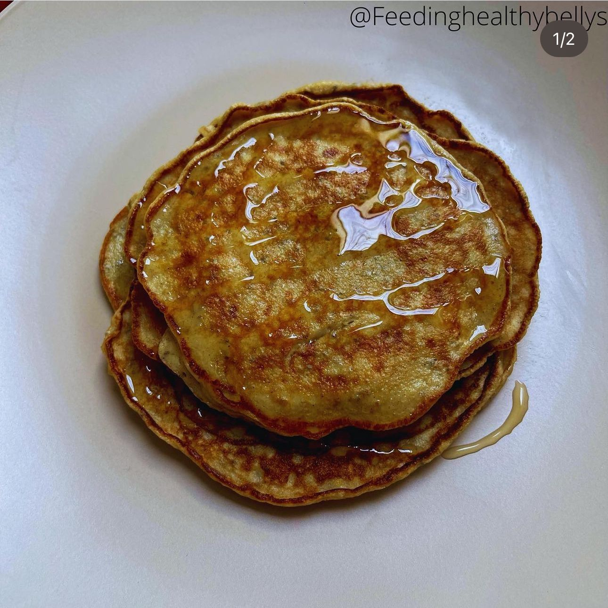
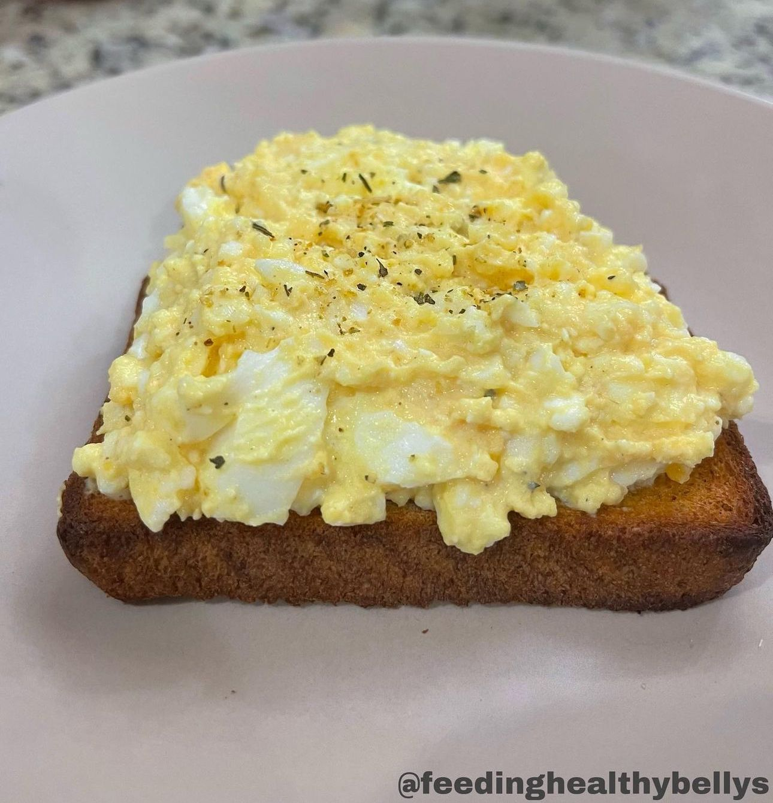
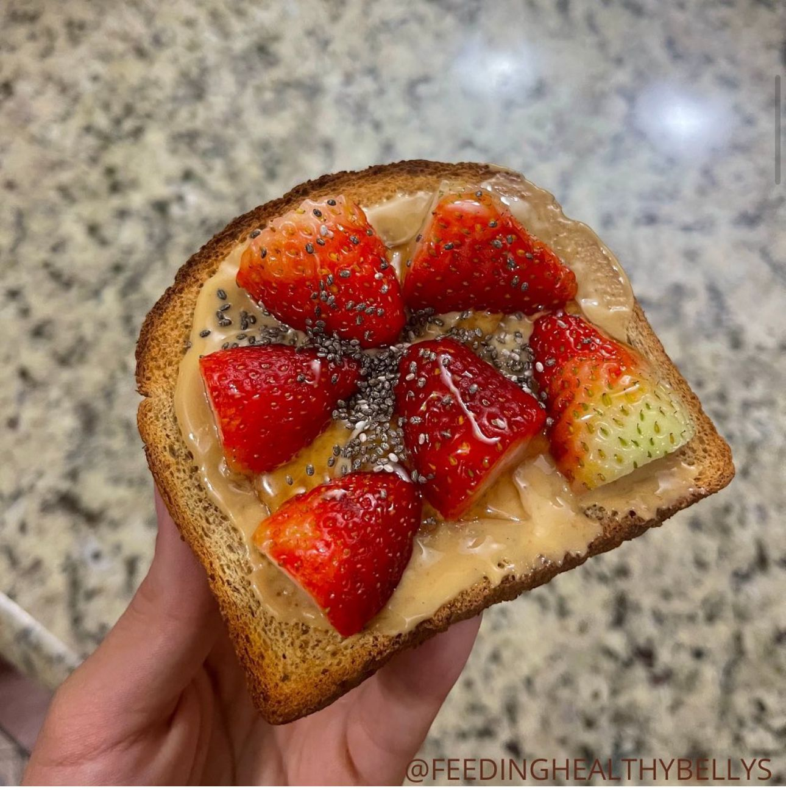

Breakfast is essential for health and well-being, since by reactivating the metabolism after fasting overnight, it provides the energy necessary to start the day, improves concentration and cognitive performance, helps regulate appetite and control weight, and contributes to the prevention of diseases such as type 2 diabetes and cardiovascular diseases. A balanced and varied breakfast, which includes foods rich in essential nutrients such as proteins, fiber, vitamins and minerals, is key to maintaining a healthy lifestyle and establishing good eating habits.
Banana and oat pancakes
Ingredients
- 1 medium banana
- 2 eggs
- 30g of ground oats
- Honey
Toast with egg salad
Ingredients
- Wholemeal toast
- 2 boiled eggs
- Greek yogurt
- Salt and pepper
Toast with strawberries
Ingredients
- Wholemeal toast
- Peanut butter
- Strawberries
- Honey and Chia seeds